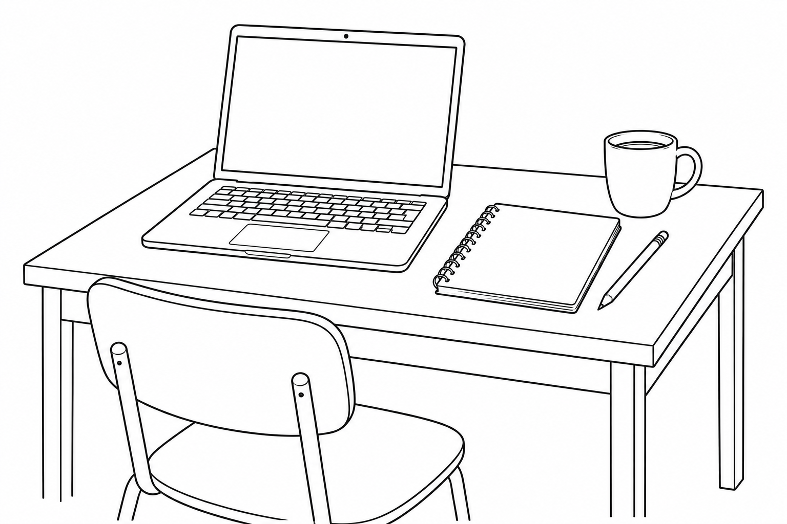

Practica con este ejemplo inventado y luego comprueba que el resultado diga lo que querías expresar.
MIRA LO QUE PUEDES HACER · EJEMPLO ILUSTRATIVO
Las notas de una reunión se convierten en tareas.
Antes · notas sin organizar
Reunión del equipo: Jo revisa los materiales el viernes. Sam reserva la sala el lunes.
→
Después · ejemplo de resultado
Jo: revisar los materiales para el viernes
Sam: reservar la sala para el lunes
Algo para probar
Haz una lista de tareas a partir de estas notas de reunión. Indica quién hace cada tarea y cuándo: Jo revisa los materiales el viernes. Sam reserva la sala el lunes.
Compara el ejemplo de resultado con las notas. No dejes que la IA agregue personas, tareas ni fechas.
Convierte estas notas en un correo breve para mi equipo: La reunión del jueves se cambió a las 2 de la tarde. En la misma sala. Traer una idea para mejorar nuestro sistema de archivos.
2. Revisa la respuesta
¿Mantuvo el jueves, las 2 de la tarde y la misma sala? ¿Inventó un número de sala o una razón para el cambio?
3. Pide un cambio
Hazlo amable y profesional, con menos de 60 palabras. Agrega un asunto claro. Usa solo los datos de mis notas.
Ejemplo de correo · resultado ilustrativo
Asunto: Reunión del jueves a las 2 de la tarde
Hola, equipo: La reunión del jueves se cambió a las 2 de la tarde, en la misma sala. Por favor, traigan una idea para mejorar nuestro sistema de archivos. ¡Gracias!
4. Revisa antes de usarlo
¿Suena como algo que tú enviarías? Revisa los detalles y cambia lo que no encaje. Tú tienes que revisar el borrador de la IA.
Terminaste tu primer recorrido de práctica.
Cuando hayas comparado el mensaje revisado con las notas y corregido lo que no encaje, habrás terminado. No necesitas enviar este correo de práctica.
Hiciste una pregunta, revisaste la respuesta, agregaste detalles útiles y comprobaste el resultado. Puedes repetir esos pasos.
Puedes detenerte aquí y volver cuando quieras practicar de nuevo.
OTRA FORMA DE PRACTICAR · UNOS 5 MINUTOS
Descríbelo. Crea un dibujo sencillo.
Puedes usar palabras para pedirle una imagen a la IA. Empieza con un dibujo de un escritorio pequeño que podría servir para una hoja de práctica o una presentación.

Ejemplo real generado con IA para la versión en inglés de la solicitud de abajo. Tu resultado puede verse diferente.
1. Prueba esta solicitud
Abre una de las herramientas de imágenes de abajo. Elige la opción para crear imágenes, pega estas palabras y selecciona Crear o Generar.
Crea un dibujo sencillo de líneas en blanco y negro de un escritorio pequeño con una computadora portátil, un cuaderno, un lápiz y una taza de café. Usa contornos limpios, un fondo blanco liso y nada de sombras ni texto.
2. Revisa el resultado
¿Puedes encontrar los cuatro objetos? ¿Los contornos son claros? Revisa si hay objetos de más, letras que no pediste o sombras. Pide una corrección si algo no corresponde.
3. Prueba un cambio fácil
Haz el mismo dibujo, pero cambia la taza de café por una planta pequeña. Mantén los contornos limpios en blanco y negro, sin sombras ni texto.
Qué revisar: el escritorio, la computadora portátil, el cuaderno y el lápiz siguen ahí; una planta sustituye a la taza. Compara las imágenes antes de usar una.
Herramientas de imágenes con acceso gratuito
Información oficial revisada el 7 de octubre de 2026. Estas herramientas ofrecen acceso gratuito continuo, no solo una prueba temporal de un plan de pago. Los límites y la disponibilidad pueden cambiar.
Usa una cuenta personal de Microsoft para escribir tu propia solicitud. No se admiten las cuentas de trabajo o escuela que usan Microsoft Entra ID.
Las creaciones rápidas gratuitas tienen un límite diario. Después, el modo Estándar es más lento y se anuncia como ilimitado. Las páginas de Microsoft no coinciden en el límite rápido (10 o 15). Revisa el número que aparece en tu cuenta. El acceso como invitado es limitado y puede ofrecer solo plantillas.
Crea una cuenta gratuita de Adobe e inicia sesión. También puedes entrar con uno de los proveedores de cuentas que Adobe admite.
Los usuarios gratuitos pueden generar un número limitado de imágenes cada día con ciertos modelos. Los límites se renuevan a diario. Adobe no promete una cantidad fija en sus preguntas frecuentes actuales. Para acceder a más modelos y límites mayores necesitas un plan de pago.
Elige el acceso gratuito; la prueba de un plan de pago es una oferta temporal aparte.
Si alcanzas el límite gratuito, vuelve cuando se renueve. También puedes practicar comparando la solicitud y el dibujo de esta página sin crear una cuenta.
Opcional: explora más práctica para el trabajo
Más práctica para tareas cotidianas del trabajo
Prueba resumir notas inventadas de una reunión, organizar una lista de tareas o pedir tres maneras de mejorar un párrafo.